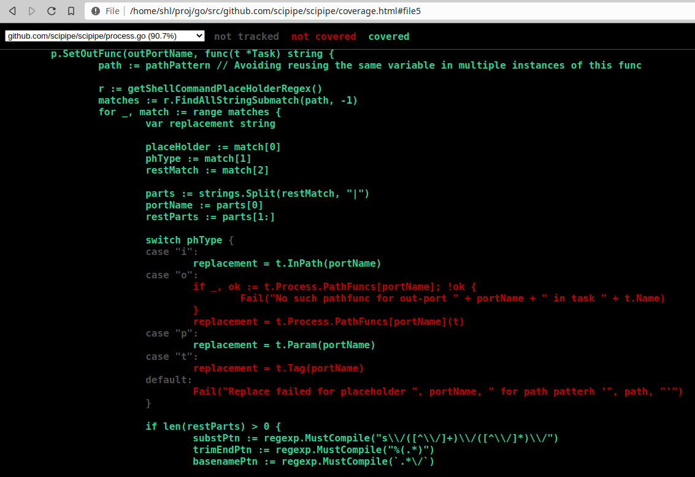

Viewing Go test coverage in the browser with one command
Go has some really nice tools for running tests and analyzing code. One
of these functionalities is that you can generate coverage information
when running tests, that can later be viewed in a browser using the
go tool cover command. It turns out though, since doing it requires
executing multiple commands after each other, it might be hard to
remember the exact commands.
To this end, I created a bash alias that does everything in one command,
gocov. It looks like this (to be placed in your ~/.bash_aliases file
or similar:
alias gocov='go test -coverprofile=.cover.out;
go tool cover -html=.cover.out -o coverage.html;
brave-browser coverage.html;
sleep 1;
rm .cover.out coverage.html;'
What is does in turn, is:
- Run Go test while creating a cover profile, saved to the file .cover.out
- Run the Go cover tool to generate an HTML file that can be shown in a browser.
- Open the file in a browser (Brave in this case)
- Sleep a few seconds, so the browser has time to open the file
- Remove the generated files, so they don’t mess up git repositories or are later mistaken for updated files.
Doing this, you get a nice HTML view that shows which lines of your code is covered by tests (green) or not covered (red), like in the screenshot shown below:

Using this information, you can try to extend your tests so that they cover also the code paths shown in red.